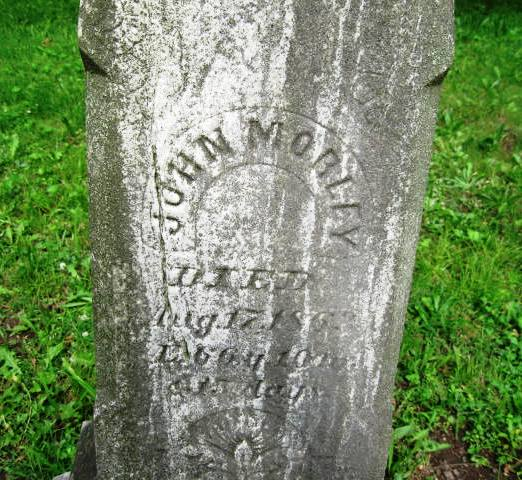

|
|
| 
John MORLEY (1796-1863) |
John MORLEY 1 2
-- Find A Grave Memorial # 30327775 John married Aurelia COGSWELL, daughter of Edward COGSWELL and Bethia BEEMAN, on Apr 10, 1817 in Hazzard, Bibb County, Georgia. (Aurelia COGSWELL was born on May 27, 1797 in Harrisburg, Dauphin County, Pennsylvania, died on Oct 27, 1883 in Galien, Berrien County, Michigan and was buried in Bakertown Cemetery, Buchanan, Berrien County, Michigan 3.) |
 Research Notes:
Research Notes: